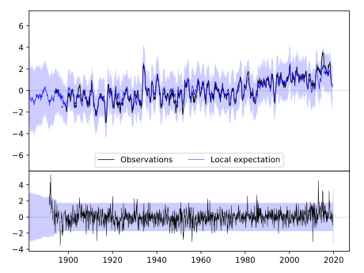
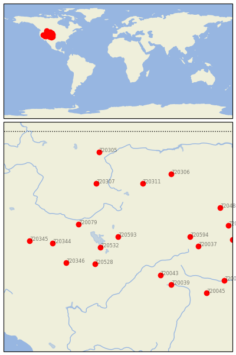
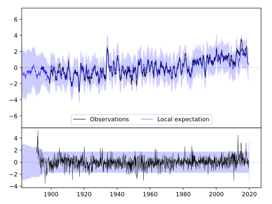
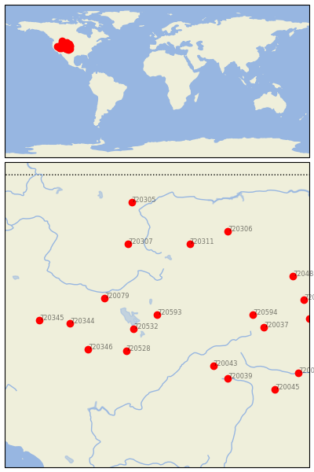

EVANSTON 1 E [USA]
 


| Neighbour | Name | Country | Distance | Lon/Lat | Years |
|---|
| 720593 | EVANSTON 1 E | USA | 0 | -111.0, 41.3 | 1889-2019 |
| 720532 | TOOELE | USA | 140 | -112.3, 40.5 | 1895-2019 |
| 720079 | OAKLEY | USA | 260 | -113.9, 42.2 | 1893-2019 |
| 720528 | DESERET | USA | 265 | -112.7, 39.3 | 1891-2019 |
| 720346 | MCGILL | USA | 385 | -114.8, 39.4 | 1888-2019 |
| 720344 | ELKO RGNL AP | USA | 406 | -115.8, 40.8 | 1888-2019 |
| 720043 | MONTROSE #2 | USA | 408 | -107.9, 38.5 | 1885-2019 |
| 720594 | LARAMIE RGNL AP | USA | 442 | -105.7, 41.3 | 1866-2019 |
| 720307 | DILLON WMCE | USA | 452 | -112.6, 45.2 | 1893-2019 |
| 720311 | RED LODGE | USA | 457 | -109.2, 45.2 | 1895-2019 |
| 720037 | FT COLLINS | USA | 501 | -105.1, 40.6 | 1873-2019 |
| 720039 | HERMIT 7 ESE | USA | 512 | -107.1, 37.8 | 1893-2019 |
| 720345 | GOLCONDA | USA | 545 | -117.5, 41.0 | 1887-2019 |
| 720306 | HYSHAM 25 SSE | USA | 600 | -107.1, 45.9 | 1892-2019 |
| 720488 | HOT SPRINGS | USA | 658 | -103.5, 43.4 | 1893-2019 |
| 720313 | ALLIANCE 1WNW | USA | 678 | -102.9, 42.1 | 1889-2019 |
| 720305 | AUGUSTA | USA | 698 | -112.4, 47.5 | 1893-2019 |
| 720332 | LODGEPOLE | USA | 702 | -102.6, 41.1 | 1893-2019 |
| 720045 | TRINIDAD | USA | 721 | -104.5, 37.2 | 1886-2019 |
| 720042 | LAS ANIMAS | USA | 755 | -103.2, 38.1 | 1867-2019 |